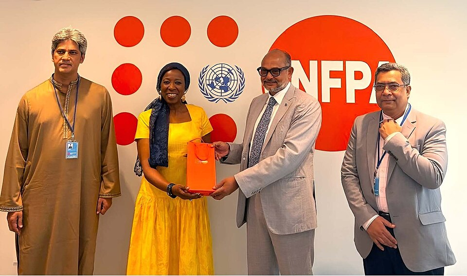
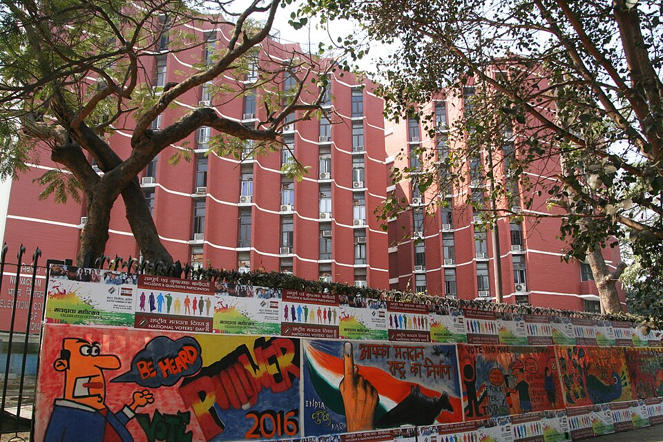

पंजाब में भाजपा अध्यक्ष के बयान पर विवाद, आप और कांग्रेस ने जताया विरोध
भाजपा अध्यक्ष नितिन नवीन के पंजाब दौरे के दौरान दिए गए बयान पर राजनीतिक घमासान शुरू हो गया है। आप और कांग्रेस ने सेना को राजनीति में घसीटने का आरोप लगाया है।
भारतीय जनता पार्टी के राष्ट्रीय अध्यक्ष नितिन नवीन के जालंधर दौरे के दौरान दिए गए एक बयान पर पंजाब की राजनीति में गर्मागर्मी बढ़ गई है। नवीन ने एक रैली के दौरान कहा था कि यदि पंजाब के पूर्व सैनिक संकल्प ले लें, तो राज्य की आम आदमी पार्टी सरकार को उखाड़ फेंका जा सकता है। उनके इस बयान के बाद विपक्षी दलों ने तीखी प्रतिक्रिया दी है।
आम आदमी पार्टी के प्रवक्ता नील गर्ग ने भाजपा पर निशाना साधते हुए कहा कि सेना और सैनिकों को राजनीति से दूर रखना चाहिए। वहीं, कांग्रेस प्रवक्ता वासु रंजन ने भी इस बयान की आलोचना करते हुए कहा कि सेना देश का सम्मान है और इसका राजनीतिकरण नहीं होना चाहिए। इस मामले में कांग्रेस ने सेना प्रमुख को पत्र लिखने की बात भी कही है।
इस बीच, कुछ सेवानिवृत्त सैन्य अधिकारियों ने भी इस बयान को अनुचित करार दिया है। रिटायर्ड कर्नल एसएस सोही ने इसे गलत बताते हुए कहा कि राजनीतिक दलों को सेना को अपने बयानों के दायरे में नहीं लाना चाहिए।
और पढ़ें
 राष्ट्रीय
राष्ट्रीयओडिशा की ओर बढ़ा चक्रवात 'अकवान', तीन लाख लोग सुरक्षित स्थानों पर पहुंचाए गए
बंगाल की खाड़ी में उठे चक्रवात 'अकवान' के मद्देनजर ओडिशा के तटीय इलाकों से करीब तीन लाख लोगों को सुरक्षित निकाला गया है। तूफान के शुक्रवार दोपहर पुरी और गोपालपुर के बीच तट से टकराने की संभावना है।

राष्ट्रीययूएनएफपीए रिपोर्ट: आर्थिक तंगी के कारण युवा टाल रहे हैं शादी का फैसला
संयुक्त राष्ट्र जनसंख्या कोष की नई रिपोर्ट के अनुसार, युवा शादी से दूर नहीं भाग रहे हैं, बल्कि आर्थिक असुरक्षा और महंगे मकानों के कारण इस फैसले को टाल रहे हैं।

राष्ट्रीययूपी विधानसभा चुनाव 2027: दिसंबर में लखनऊ पहुंचेगा निर्वाचन आयोग, तैयारियों की होगी अंतिम समीक्षा
उत्तर प्रदेश विधानसभा चुनाव 2027 को लेकर निर्वाचन आयोग की तैयारियां तेज हो गई हैं। दिसंबर में पूर्ण आयोग लखनऊ आकर मंडलवार समीक्षा के बाद चुनावी व्यवस्थाओं का जायजा लेगा।
राष्ट्रीयबुलंदशहर में मुठभेड़: डी कंपनी से जुड़ा कुख्यात गैंगस्टर नसीम दुर्रानी ढेर
उत्तर प्रदेश के बुलंदशहर में नोएडा एसटीएफ और दिल्ली पुलिस के संयुक्त अभियान के दौरान हुई मुठभेड़ में कुख्यात गैंगस्टर नसीम दुर्रानी मारा गया। उस पर हत्या और लूट के 25 से अधिक मामले दर्ज थे।